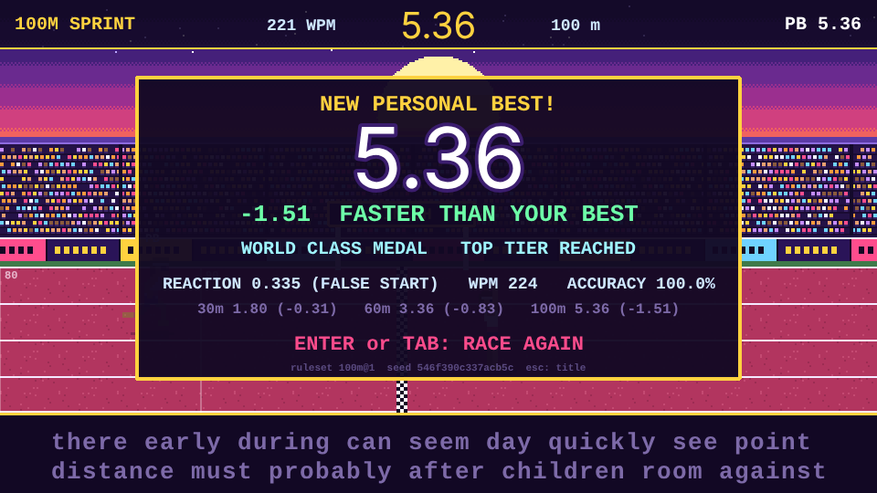
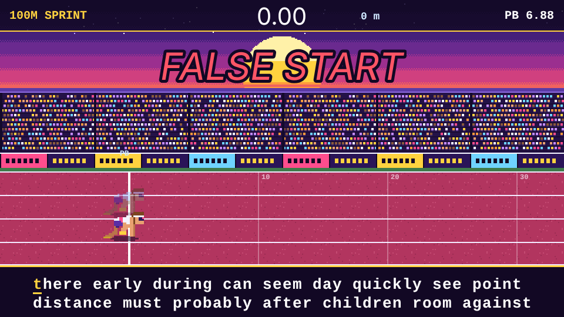

Your keyboard is the controller
One correct key is one metre. Type 120 words a minute and you run the 100m in about ten seconds. A wrong key and your athlete stumbles.

Free in your browser · Needs a physical keyboard · Your best time saves on your device
Tip: click the game once so it can hear your keyboard. Enter starts a race, Enter or Tab races again.
One correct key is one metre. Type 120 words a minute and you run the 100m in about ten seconds. A wrong key and your athlete stumbles.

Every finish shows how far you were from your best, with splits, reaction time, words per minute and accuracy. One key starts the next race.

Your best run lines up in the next lane, replayed key for key. Finish within a tenth of a second of it and it goes to a photo finish.

The gun fires after a random pause. Jump it, or react faster than a human can, and you lose time out of the blocks.
Where the build is and what comes next.
Single-player sprint with a start sequence, results and a saved personal best.
Timing checks, five keyboard layouts, drive phase, finish dip and photo finish.
Your stats in one place: times, words per minute, accuracy and race history.
Eight lanes, synchronised starts, private rooms and results computed by the server.
A leaderboard for each event. The top three each week take gold, silver and bronze, kept in an all-time record by month and year.
Five track events in all, from pure burst to three minutes of endurance.
What changed, newest first.
Loading…